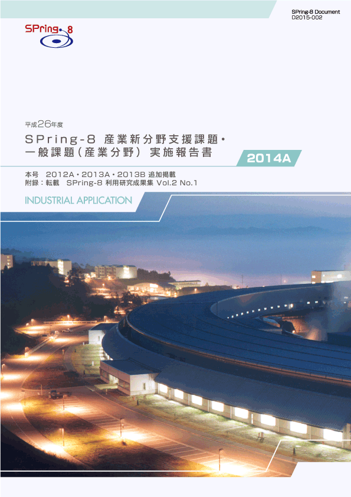
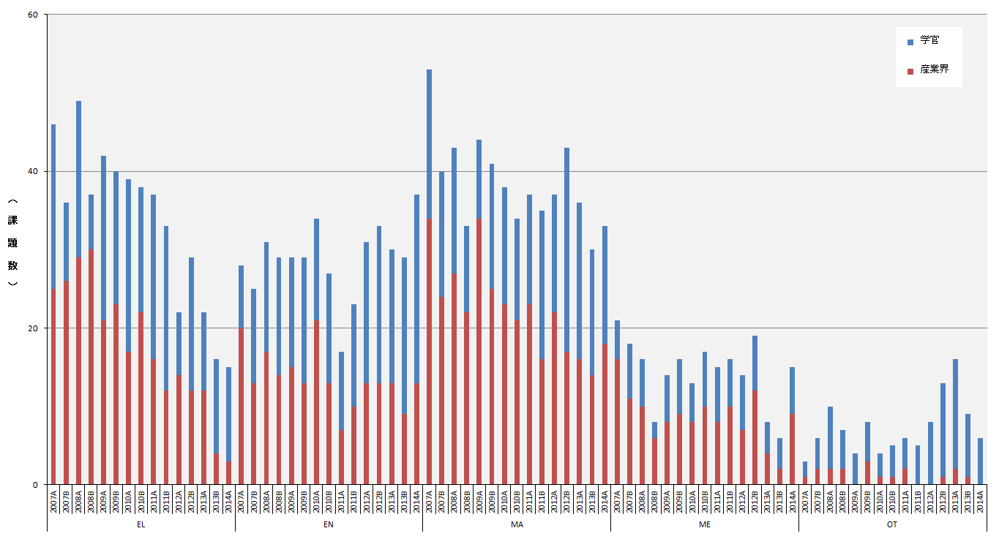
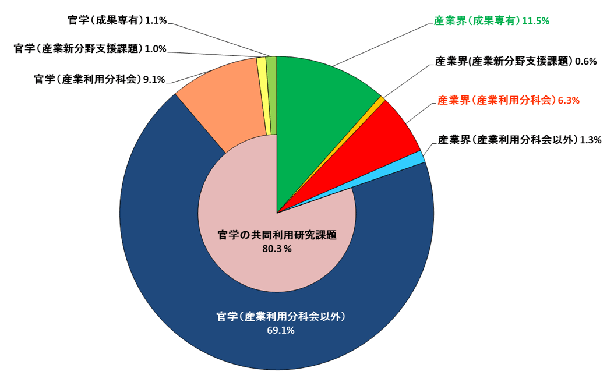
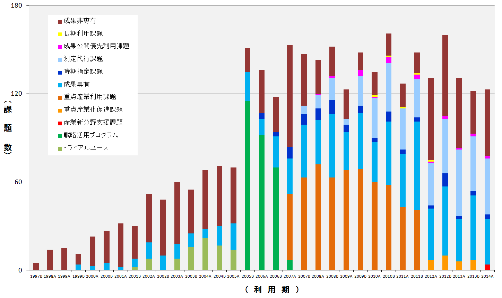
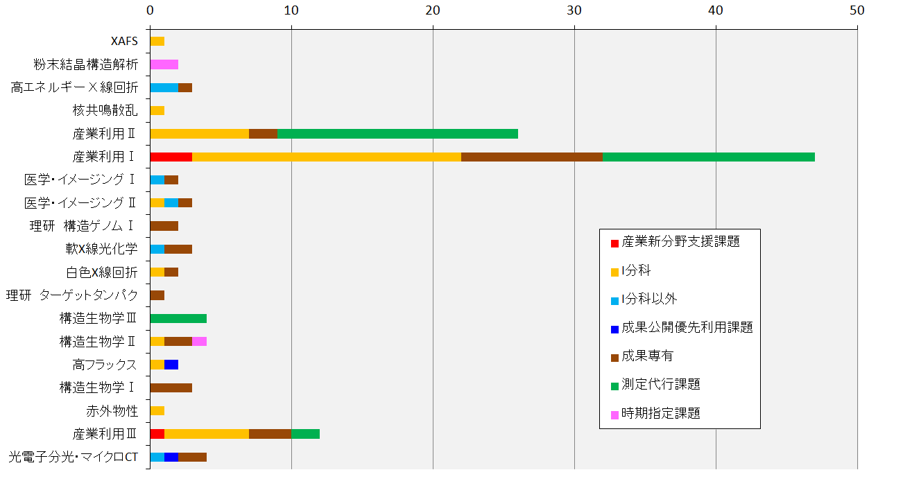

目次

1. はじめに2. 課題募集制度の概要
3. 成果公開の考え方
4. 実施状況
5. 産業利用分野の利用動向
6. 報告書の採録対象
7. 報告書
* 送付を希望される方は、連絡先（氏名、所属、〒住所、E-mail）をご記入の上、 事務局 support@spring8.or.jp までE-mailでご連絡ください。
はじめに
平成24年度より2年間実施した重点産業化促進課題（領域指定型重点課題）が終了し、平成26年度（2014A期）より新たな領域指定型重点課題として、これまで放射光利用が少なかった産業分野のSPring-8利用の拡大を目指して産業新分野支援課題の募集を開始した。本報告書は2014A期の産業利用分野における課題実施状況の報告を目的として、2014A期に実施した一般課題（産業利用分野）と産業新分野支援課題のうちSPring-8利用研究成果集としての審査を行わなかった課題の報告書を収録したものである。
課題募集制度の概要
- 一般課題（産業利用分野）
一般課題（産業利用分野）の課題とは、課題申請の際に産業利用分野（I）での課題審査を希望した成果非専有の一般課題（課題審査は課題審査委員会産業利用分科会が行う）を指し、課題申請者の所属で区別されるものではない。大学等の公的研究機関に所属する者でも、一般課題（産業利用分野）への申請は可能である一方、民間企業に所属する者が他の審査分野に申請することも可能である。なお、民間企業に所属する者が産業利用分野以外の分野に申請した課題は一般課題（産業利用分野）としては扱わない。一般課題（産業利用分野）の募集は他分野の一般課題と同様に、年2回の課題募集期間において全ての共用ビームラインへの申請が可能である。一般課題（産業利用分野）に特徴的な制度は以下の6項目である。
a) 産業利用ビームラインI（BL19B2）、II（BL14B2）、III（BL46XU）は半期ごとに前半を1期、後半を2 期とした2回の課題募集を行う（年4回課題募集を実施）。1期と2期の両方で利用実験を行いたい場合は、継続的な研究内容の課題であってもその都度、新規課題として応募することが必要である。なお2013A期よりこれらのビームラインでは成果非専有の一般課題は、審査希望分野が産業利用分野である一般課題（産業利用分野）のみとした。これらのビームラインを指定した申請であるものの、審査希望分野が他分野の課題は申請者の希望にかかわらず産業利用分野で審査する。
b) 新規利用拡大の観点から課題審査において利用経験を考慮する。
c) 民間企業利用拡大の観点から課題審査において所属機関を考慮する。
d) 課題実施後約2～4か月以内に所定の書式の産業利用課題実施報告書を提出する。なお、この報告書はSPring-8利用研究成果集として審査を受けることも可能である。
e) 全採択課題に担当コーディネーターを配置する。
f) 科学技術的妥当性に関する審査は
(1)産業基盤技術としての重要性および発展性
(2)社会的意義および社会経済への寄与度の観点を重視して実施する。
に重点をおいて実施する。
- 産業新分野支援課題
「産業新分野支援課題」を領域指定型の重点研究課題として、平成25年9月24日に指定した。その狙いは以下のとおりである。
これまでの産業利用促進の取り組みにより、一部の産業分野ではSPring-8の放射光利用が普及した一方、経済のグローバル化を反映して国内の産業構造も大きく変化し、新しい産業の創生をもたらすような研究開発が必要になっている。そこで、新産業分野の研究開発を促進するため、SPring-8で放射光利用に新規に取り組む産業分野の課題に重点的な支援を行う産業新分野支援課題を実施する。
2-1) 募集の対象
産学官連携促進が目的であるため、研究組織（共同で実験を行うグループ、つまり実験責任者と共同実験者から成るグループ）が「産学」、「産官」、もしくは「産官学」である課題を募集の対象とする。例えば、産業界（民間企業を指す）を含まない「官学」の研究組織や産業界のみから成る組織は対象とはならない。また、JASRIは独立した所属機関とは見なさない（JASRIは「産」「官」のいずれにもあたらない）。
申請の折には産学官連携が効果的に行われることを明らかにするために、課題実施にあたって、それぞれの所属機関ごとの役割分担を明記することが求められる。
課題の目的に沿って、SPring-8での放射光利用実績の少ない産業分野の研究開発に関する課題を募集の対象とする。該当する産業分野の例として食品･食品加工、農林水産物、建設資材、金属加工、鉱物資源が挙げられるが、この限りではない。例示された分野に該当しない場合は、課題申請の際に放射光利用実績の少ない産業分野であることの説明が求められる。なお、重点産業化促進課題のような実験責任者及び共同実験者の所属機関に関する要件は設定しない。
2-2) 対象ビームライン、シフト数割合、及び募集
産業利用ビームラインI（BL19B2）、II（BL14B2）、III（BL46XU）を対象に、ユーザー実験に供するビームタイムのうち20%以内（施設留保を含めたユーザータイムの16%以内）を配分する。
募集は一般課題と同時期に半期2回行う。なお、1期募集において採択された通期課題の2期分のシフト数も含めた合計シフト数が半期を通じたビームタイムの上限に達した場合は2期に募集を行わない。
2-3) 通期課題
1期、2期の両方で利用実験を行いたい場合は、その都度新規課題としての応募が必要であるが、継続的･計画的な実施により一層の成果創出が期待される課題は、“通期課題”とし1期応募の折に2期分のシフト数も含めた申請を受付ける。なお、2期は通期課題の募集は行わない。
2-4) 審査
一般課題（産業利用分野）に先んじて課題審査委員会産業利用分科会が審査を行う。なお、産業新分野支援課題として不採択となった課題は、自動的に一般課題（産業利用分野）の課題として、他の一般課題と一緒に改めて審査される。産業新分野支援課題においては一般課題（産業利用分野）の観点に加えて研究対象がSPring-8での放射光利用の新規な産業分野に該当するかどうかも含めて審査する。
2-5) 報告
WEBより提出するビームタイム利用報告書、利用実験課題報告書に加えて課題実施後約2～3か月以内に所定の書式の産業新分野課題実施報告書を提出する。なお、この報告書はSPring-8利用研究成果集として審査を受けることも可能である。
成果公開の考え方
なお、平成26年度2014A期の一般課題（産業利用分野）及び産業新分野支援課題の実施報告は、平成27年9月に開催予定の「第12回産業利用報告会」等で口頭及びポスター形式での報告を予定している。
実施状況
以下に平成26年度2014A期の産業新分野支援課題、及び一般課題（産業利用分野）の応募・採択結果を表1、表2にまとめる。- 応募・採択結果 産業新分野支援課題
表1．応募時期及び研究機関別課題応募・採択結果
*課題で不採択となり、一般課題として再審査され採択された課題は採択数から除外している。募集時期 機関分類 応募数＊ 採択数＊ 採択率（%） 第1回募集学官22100.0産業界22100.0合計44100.0第2回募集学官5480.0産業界3266.7合計8675.0総計121083.3
産業新分野支援課題は2014A第1期より募集を開始したが、制度に対する利用者の認知が低いためか、放射光利用が普及していない分野を対象としたためか、応募は産業界から2件、学官から2件の計4件にとどまり、全件が採択となった。これらの課題は食品や金属加工に関連した課題であった。
2014A第2期は制度の認知度が向上したためか応募数は8件と第1期の2倍になった。採択課題は食品、金属加工、鉱物資源分野を研究対象としていた。また、研究対象が新分野と認定できない課題が1件不採択となった。
2014A第1期、2期ともに応募数は少ないものの、採択率は一般課題を大きく上回って新分野における放射光利用促進の目的に沿った結果となった。
- 応募・採択結果 一般課題（産業利用分野）
表2．応募時期及び研究機関別一般課題応募・採択結果
*応募数には産業新分野支援課題で不採択となり、一般課題として再審査された課題（1期産業界 1、学官 0、2期 なし）を含む。また、採択後に12条課題に分類されるJASRI職員から申請された課題を応募数（1期 7課題、2期 10課題）、採択数（1期 6課題、2期 6課題）を除く。一般課題と同時に審査される萌芽的研究支援課題の応募数（1期 6課題、2期 1課題）、採択数（1期 2課題、2期 0課題）を除く。募集時期 機関分類 応募数＊ 採択数＊ 採択率（%） 第1回募集 学官453680.0産業界393589.7合計847184.5第2回募集 学官22836.4産業界15746.7合計371540.5総計1218671.1
一般課題（産業利用分野）は応募数が121課題（12条課題を含めると138課題）で2013A期の応募数153課題（12条課題を含む）より10%程度減少した。特に産業界からの応募の減少が大きく2013A期よりも10件（約15%）の減少となった。しかし、産業界の採択課題数は2013A期が40件に対して2014A期が42件と大きな変動はなかった。産業界の応募が減少しているにもかかわらず採択数に減少がない（採択率が向上している）ことの理由として、2011B期よりSPring-8利用研究成果集等による成果公開が義務付けられたことが挙げられる。SPring-8利用研究成果集は課題申請と報告内容の整合性を含めた査読審査を行うため、継続的に利用している産業界ユーザーの課題申請記載の充実に役立っているものと考えられる。継続利用者が採択されるということは、新規利用者の採択がより困難になることを意味しているため、今後は産業新分野支援課題に該当しない分野の新規利用者への対応が必要となる可能性がある。
- SPring-8利用研究成果集としての審査
前記のとおり2011B期より成果公開の扱いが変更になったため、実験責任者の希望に応じて重点産業利用報告書をSPring-8利用研究成果集として査読審査を受けて公開文書として扱うことも可能とした。産業新分野支援課題及び産業利用分野の一般課題も同様で、SPring-8利用研究成果集として審査を受ける公開文書とすることができる。平成27年1月16日の時点で実施報告書作成対象96課題のうち28課題がSPring-8利用研究成果集としての審査を希望している。公開は査読審査が終了し成果審査委員会での承認後となるため、これら28課題の報告書はここには採録されない。
産業利用分野の利用動向
-
１)産業分野ごとの動向
図1は、産業利用分科会で審査を経て採択された成果非専有課題実施件数の推移である。2014A期は産業新分野支援課題と一般課題（産業利用分野）の和、2012A期から2013B期までは重点産業化促進課題と一般課題（産業利用分野）の和、2011B期以前は重点産業利用課題と一般課題（産業利用分野）の和である。かつて産業利用の主役であったエレクトロニクス分野（EL）の利用の減少、特に産業界による利用の減少には未だ歯止めがかからない。素材分野（MA)、エネルギー環境分野（EN)は2014A期も例年並みであったが、エネルギー環境分野で学官の利用が増えていることが特徴的である。なお、健康・医療分野（ME）は2013A、B期のほぼ2倍に増加した。特に民間企業による利用の増加が顕著である。これは、産業新分野支援課題で食品加工を対象とした課題が採択されたことによる。産業新分野支援課題は、まだまだ応募、実施数ともに多くはないが、新分野の利用促進に一定の効果があったことがわかる。

図1. 産業利用分野における成果非専有課題実施件数
２）2014A期における民間企業の利用状況
図2は2014期共同利用研究実施課題（共用ビームラインで実施した課題）を所属機関、専有 ／非専有の別でその割合を示している。民間企業に所属する実験責任者の課題数が全体の19.7%で2013A期の20.9%より減少した（減少率6%（0.197/0.209=0.94））。しかし、利用課題種の内訳は一般課題（産業利用分野）が6.3%、産業新分野支援課題が0.6%、測定代行を含む成果専有課題が11.5%で2013Aとほぼ同じである。一方、産業新分野支援課題の重点産業化促進課題に対する割合、産業利用分科以外で審査された一般課題の割合がともに2013A期の約半分となったことが主な減少要因である。改めて産業新分野支援課題に該当する新規利用分野開拓が必要であることを示す結果となった。なお、2013B期まではっきりと増加傾向にあった成果専有課題の割合が頭打ちとなった。この理由として、民間企業による成果専有型の課題を利用の中心に据えた“あいちシンクロトロン光研究センター”の稼働が考えられるため、今後の利用動向に注意を払うとともに、今後は同センターをはじめ国内の他の放射光施設との役割分担と連携を検討することが重要になると考えられる。

図2. 2014A期 共同利用研究実施課題における民間企業の実験責任者の割合
３）民間企業の課題実施動向
図3は共用ビームラインにおける民間企業の課題実施状況の推移を課題種ごとに示している。毎年A期はB期よりも実施課題数が少ない傾向があるが、2014A期はリーマンショックの影響を受けた2009A期並みであった。

図3．民間企業による共同利用研究実施課題の課題分野別推移
４）民間企業の共用ビームライン利用状況
2014A期におけるビームラインごとの民間企業による利用件数を図4に示す。一般課題（産業利用分野）及び成果専有課題は、産業利用ビームラインI、II、IIIでの実施が他のビームラインよりも著しく多いのはこれまでと同様である。また、産業利用I、IIビームラインにおいて測定代行を含む成果専有課題が一般課題（産業利用分野）及び産業新分野支援課題などの審査課題よりも実施件数が多くなるのもここ数年の傾向であるが、XAFS測定代行を実施しているBL14B2での測定代行の実施数が2013A期よりも大幅に減少している。これも、前述のあいちシンクロトロン光研究センターの稼働の影響と考えている。

図4．2014A期 利用技術分野別（ビームライン別）民間企業利用件数
報告書の採録対象
平成27年1月16日の時点で課題のうち28課題が利用研究成果集としての審査を希望している。これ以外の68課題の産業新分野支援課題実施報告書と産業利用課題実施報告書を採録している。また、追加掲載として、2012A期1課題、2013A期1課題、2013B期1課題も掲載している。また、SPring-8利用研究成果集として新たに採択、公開された課題も付録としてSPring-8利用研究成果集より転載して採録している。
SPring-8利用研究成果集 Vol 2 No.1 （http://user.spring8.or.jp/resrep/?cat=14）
連絡先（氏名、所属、〒住所、E-mail）をご記入の上、事務局 support@spring8.or.jp までE-mailでご連絡ください。